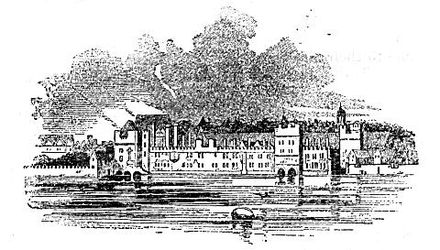
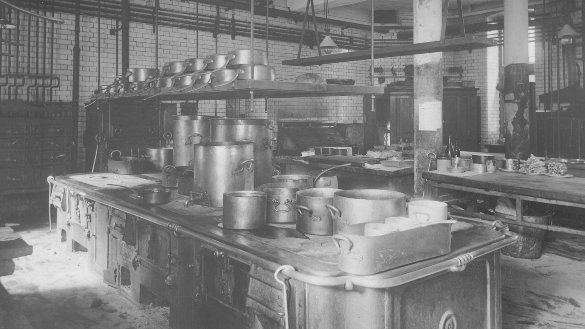
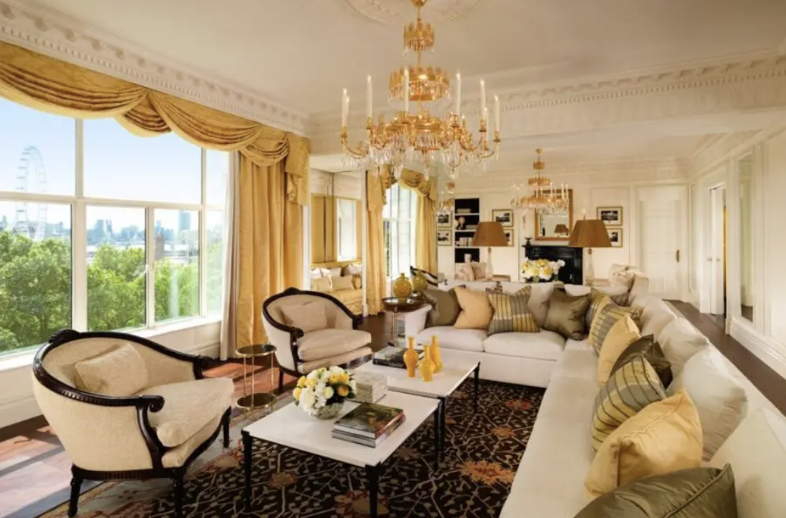

History
London, England
Richard D'Oyly Carte
August 6, 1989
43 stories
267 rooms
The Savoy Hotel is a luxury hotel located in the Strand in the City of Westminster in central London, England. Built by the impresario Richard D'Oyly Carte with profits from his Gilbert and Sullivan opera productions, it opened on 6 August 1889. It was the first in the Savoy group of hotels and restaurants owned by Carte's family[a] for over a century. The Savoy was the first hotel in Britain to introduce electric lights throughout the building, electric lifts, bathrooms in most of the lavishly furnished rooms, constant hot and cold running water and many other innovations. Carte hired César Ritz as manager and Auguste Escoffier as chef de cuisine; they established an unprecedented standard of quality in hotel service, entertainment and elegant dining, attracting royalty and other rich and powerful guests and diners.
Timeline
Early Years
The Savoy Palace. Source: Wikipedia
Influenced by the luxurious American hotels he visited, Richard D'Oyly Carte aimed to replicate such opulence in Britain, leading to the opening of the Savoy Hotel in London in 1889. Designed by Thomas Edward Collcutt, who also worked on Wigmore Hall, the hotel was named to honor the site's historical significance. It drew investment from notable figures, including Sir Arthur Sullivan, and marked several firsts in Britain: it was the initial hotel lit entirely by electricity, featured electric lifts, and provided en-suite marble bathrooms with both hot and cold running water across most of its 268 rooms. The Savoy's construction, financed by profits from Gilbert and Sullivan's "The Mikado," also boasted glazed brickwork and its own artesian well to counteract London's polluted air.
Despite its innovative offerings, the Savoy faced financial difficulties shortly after opening, leading to a management overhaul. Carte hired César Ritz, who, along with chef Auguste Escoffier, transformed the Savoy into a haven for the elite, making public dining fashionable for aristocratic women. Their success allowed Carte to expand his hotel empire. However, by 1897, Ritz and Escoffier were dismissed due to financial misconduct, a scandal that remained quiet until 1985. Following Carte's death in 1901, his son, Rupert, took over, further expanding and modernizing the Savoy, which included the introduction of Britain's first serviced apartments and the unique Savoy Bed. The hotel continued to be a site for extravagant events and maintained its reputation for luxury, embodied in its bespoke services and amenities.
1913-WWII
The kitchen in The Savoy. Source: The Savoy
After Helen Carte's death in 1913, Rupert D'Oyly Carte took over her hotel group, selling the Grand Hotel, Rome, in 1919 and modernizing the Savoy. He introduced air conditioning, steam heating, soundproof windows, 24-hour room service, and telephones in bathrooms. The Savoy also started manufacturing its own mattresses and added dancing to attract a fashionable clientele. The 1923 shooting of Prince Fahmy Bey by his wife at the hotel became a notorious incident. From the 1930s, under Carte and Reeves-Smith, the Savoy began advertising internationally. Hugh Wontner became managing director in 1941, navigating the hotel through WWII challenges like bomb damage and food rationing. The Savoy, favored by American officers and diplomats, hosted war leaders like Winston Churchill and became known for its luxurious air-raid shelters. Wontner's cooperation with wartime restrictions included imposing a dining price limit, highlighting the Savoy's adaptability and resilience during challenging times.
1946-2007

The old exterior of The Savoy. Source: The Savoy
After World War II, the Savoy Group faced a significant strike by its employees in solidarity with a dismissed waiter, prompting a government-led inquiry. Despite this, the hotel remained a magnet for celebrities. In 1946, a pioneering "Savoy Management Scheme" was launched by Wontner, lasting 50 years, while key appointments under Rupert D'Oyly Carte's chairmanship included Wyllie Adolf Hofflin as general manager (1941-1960) and August Laplanche as head chef (1946-1965). Upon Carte's death in 1948, his daughter Bridget declined the chairmanship, opting for vice-chair, leading to Wontner's appointment as the first combined chairman and managing director since the hotel's founder. Wontner served until 1979 as managing director, then as chairman until 1984, and subsequently as president until 1992.
In 1953, the Savoy hosted the grand Savoy Coronation Ball in honor of Queen Elizabeth II's coronation, attended by luminaries and featuring elaborate decor supervised by Bridget D'Oyly Carte. Under Wontner, the Savoy hired its first British head chef, Silvino Trompetto, while Giles Shepard, who succeeded Wontner as managing director from 1979 to 1994, bolstered the hotel's defenses against a takeover attempt and spearheaded initiatives such as competitive staff salaries and international marketing. Ramón Pajares served as managing director from 1994 to 1999. The hotel remained a beloved social hub, but the D'Oyly Carte family line concluded with Bridget's childless passing in 1985. In 1998, The Blackstone Group acquired the Savoy, eventually selling it to Quinlan Private in 2004. Subsequent transactions saw the Savoy hotel and Simpson's-In-The-Strand changing hands, managed by Fairmont Hotels and Resorts, while Quinlan retained other properties as the Maybourne Hotel Group.
2010-present
A newly renovated suite at the Savoy. Source: Wikipedia
In December 2007, the Savoy Hotel closed for a £100 million renovation, selling off 3,000 pieces of furnishings and memorabilia. Delays pushed the reopening to October 2010, with costs ballooning to £220 million due to structural issues. The revamp focused on energy efficiency, reducing electricity usage by 50% and enhancing reuse and recycling. New features include the Thames Foyer with a restored glass dome, hosting late-night dining and famed afternoon tea. Other additions are the Savoy Tea shop, a glass-enclosed fitness gallery, and the Beaufort Bar with Art Deco styling and nightly cabaret. Renamed Kaspar's, the River Restaurant showcases Art Deco design, while the American Bar remains largely unchanged. Room decor varies from Edwardian to Art Deco, with reintroduced butler service. Gordon Ramsay oversees the Savoy Grill. Private dining rooms honor Gilbert and Sullivan operas, and a hotel museum offers rotating exhibits. Critics praised the revamped Savoy's ambiance and personalized service but noted mixed reviews for the Savoy Grill. Despite initial challenges, the hotel celebrated its 125th anniversary in 2014, garnering acclaim from the London Evening Standard.